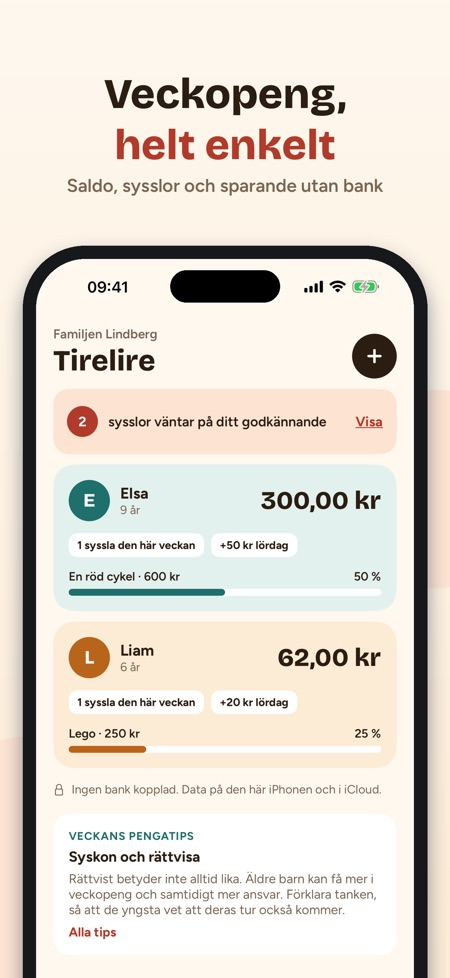
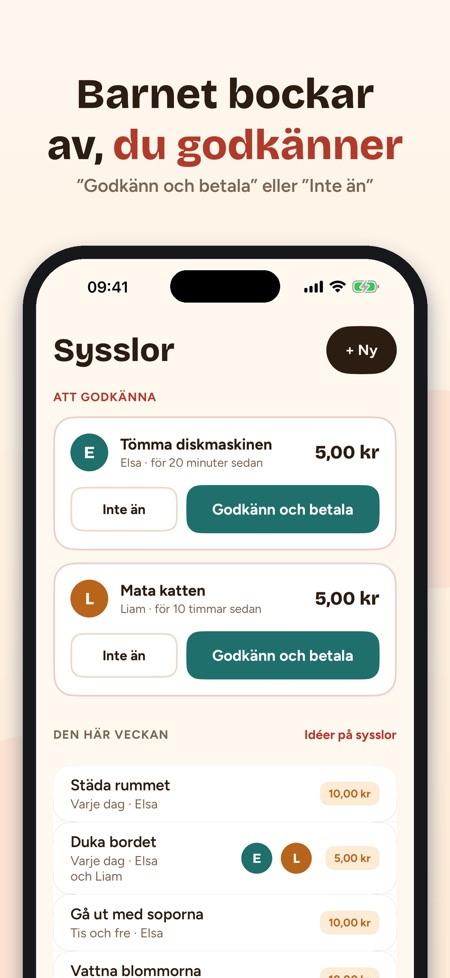
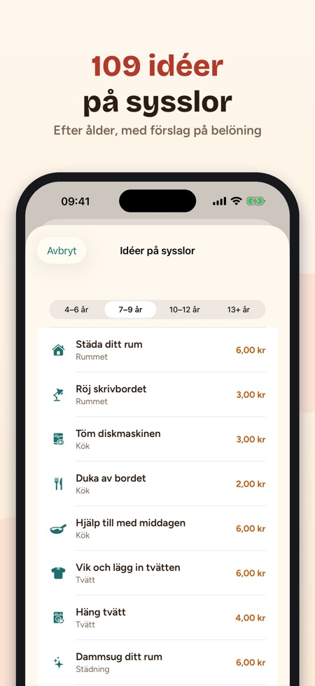

Sysslor, sparande och mål. Varje barns saldo, sysslor att godkänna och sparmålet – delat mellan båda föräldrarna via iCloud. Ingen bank, inget kort och inga annonser.



Tirelire håller koll på era barns veckopeng, belönar sysslor och hjälper dem att spara till något som betyder något för dem. Ingen bank och inget kort: appen sköter bara bokföringen, och mynten stannar i den riktiga spargrisen.
VARJE BARNS SALDO
• Ett kort för varje barn: saldo, veckans sysslor, nästa veckopeng och sparmål
• Veckopengen sätts in av sig själv på den valda dagen, även om appen har varit stängd
• + Lägg till / − Utgift med två tryck och hela historiken sparad
SYSSLOR SOM GER PENGAR
• 109 idéer på sysslor sorterade efter ålder (4–6, 7–9, 10–12 och 13+ år) med förslag på belöning
• En gång, varje dag, vissa dagar eller en gång i veckan
• Barnet bockar av, ni godkänner: ”Godkänn och betala” eller ”Inte än”. Halvklart? Betala halva summan.
ETT MÅL SOM MOTIVERAR
• 32 mallar för mål: cykel, spel, utflykt, present …
• Ringen visar hur långt barnet har kommit och när målet nås i nuvarande takt
• ”Nå målet snabbare” föreslår sysslor som passar åldern
ETT ENKELT BARNLÄGE
• På er iPhone eller barnets egen: saldo, mål och dagens sysslor
• Barnet bockar av när det är klart; tillbaka till föräldradelen med Face ID eller lösenkoden
• 14 märken att samla
FÖR BÅDA FÖRÄLDRARNA
• Bjud in den andra föräldern med iCloud-delning: samma saldon, båda godkänner från sin egen iPhone
• 35 tips om att prata pengar med barn, efter ålder
• Widget, påminnelse på veckopengsdagen, CSV-export, kronor eller euro
KÖP
Kan användas utan köp med ett barn. Ett engångsköp låser upp obegränsat antal barn, delning med den andra föräldern, barnläge och widget. Ingen prenumeration.
Familjens data stannar på iPhonen och i er egen iCloud. Anonym användningsstatistik skickas bara om du tillåter det och kan ändras i Inställningar; i barnläge skickas ingenting.